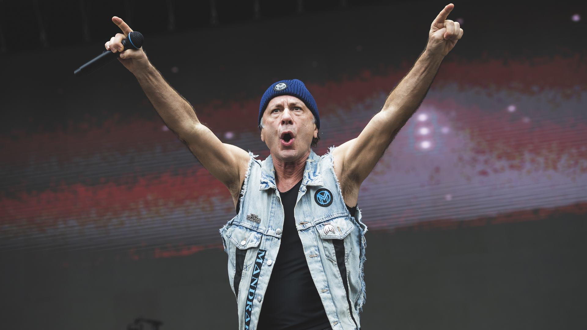

Guns N' Roses estreia músicas novas na abertura da turnê mundial
Guns N' Roses durante show de abertura da turnê em Monterrey — crédito: divulgação
O primeiro show da turnê mundial 2026 do Guns N' Roses aconteceu em Monterrey, México, e trouxe
uma surpresa: as faixas "Nothin'" e "Atlas" foram tocadas ao vivo pela primeira vez. Além disso,
Dizzy Reed assumiu os teclados no lugar de Melissa Reese, que se afastou por motivos pessoais.
Steve Morse conta como Ritchie Blackmore reagiu à sua saída do Deep Purple
Steve Morse em entrevista sobre sua trajetória no Deep Purple — crédito: divulgação
Em entrevista recente, o guitarrista Steve Morse revelou que ainda mantém contato com Ritchie
Blackmore por e-mail e que há uma camaradagem entre eles, apesar das tensões do passado.
Morse destacou que, quando deixou a banda, Blackmore se recusou a atacá-lo publicamente.
A música do AC/DC que Angus Young se arrepende de ter gravado
Angus Young em entrevista sobre os primeiros anos do AC/DC — crédito: divulgação
Angus Young admitiu ter vergonha da balada "Love Song", lançada em 1975 no álbum australiano
High Voltage. A faixa, com piano e vocais contidos de Bon Scott, era completamente diferente
do som pesado que definiria a banda — e felizmente as rádios ignoraram ela.
Bruce Dickinson anuncia gravação de novo álbum solo para 2026

Bruce Dickinson durante turnê The Mandrake Project Live 2025 — crédito: divulgação
O vocalista do Iron Maiden contou que pretende entrar no estúdio em janeiro de 2026 para gravar
seu oitavo disco solo, com previsão de lançamento em 2027. Dickinson também aproveitou para
falar sobre sua turnê norte-americana, que inclui uma passagem pelo Brasil.
Rock in Rio 2026 revela duas atrações para o dia dedicado ao metal
Palco Mundo do Rock in Rio no Parque Olímpico — crédito: divulgação
O Rock in Rio confirmou mais duas bandas para o dia 5 de setembro de 2026, data reservada ao
rock e ao metal. O Avenged Sevenfold vai fechar o Palco Mundo, enquanto o Bring Me The Horizon
completa a grade do evento no Parque Olímpico, no Rio de Janeiro.
Amy Lee revela detalhes do novo álbum do Evanescence previsto para 2026
Amy Lee em entrevista sobre o novo álbum — crédito: divulgação
A vocalista contou que grande parte do material já está gravado, mas ainda precisa de vocais e
letras. Lee afirmou não se sentir tão inspirada desde o álbum de estreia Fallen (2003) e revelou
que a banda fará uma turnê mundial de junho a outubro de 2026.